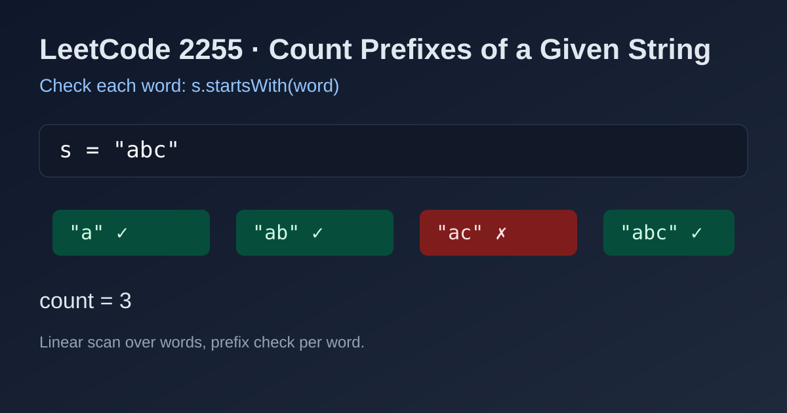

LeetCode 2255: Count Prefixes of a Given String (StartsWith Linear Count)
LeetCode 2255StringPrefix MatchToday we solve LeetCode 2255 - Count Prefixes of a Given String.
Source: https://leetcode.com/problems/count-prefixes-of-a-given-string/

English
Problem Summary
Given a list of strings words and a string s, count how many words are prefixes of s.
Key Insight
Each word can be checked independently with a direct prefix test (s.startsWith(word) or equivalent). No sorting, trie, or advanced structure is needed for this constraint.
Algorithm
- Initialize ans = 0.
- For each word in words, if s starts with word, increment ans.
- Return ans.
Complexity Analysis
Let n be number of words and m be average checked prefix length.
Time: O(n * m).
Space: O(1) extra.
Common Pitfalls
- Confusing substring with prefix: prefix must start at index 0.
- Counting duplicates incorrectly: duplicate words should each be counted if they are prefixes.
- Overengineering with trie for small/medium constraints.
Reference Implementations (Java / Go / C++ / Python / JavaScript)
class Solution {
public int countPrefixes(String[] words, String s) {
int ans = 0;
for (String w : words) {
if (s.startsWith(w)) ans++;
}
return ans;
}
}func countPrefixes(words []string, s string) int {
ans := 0
for _, w := range words {
if strings.HasPrefix(s, w) {
ans++
}
}
return ans
}class Solution {
public:
int countPrefixes(vector<string>& words, string s) {
int ans = 0;
for (const string& w : words) {
if (s.rfind(w, 0) == 0) ans++;
}
return ans;
}
};class Solution:
def countPrefixes(self, words: List[str], s: str) -> int:
ans = 0
for w in words:
if s.startswith(w):
ans += 1
return ansvar countPrefixes = function(words, s) {
let ans = 0;
for (const w of words) {
if (s.startsWith(w)) ans++;
}
return ans;
};中文
题目概述
给定字符串数组 words 和字符串 s，统计 words 中有多少字符串是 s 的前缀。
核心思路
对每个单词独立做前缀判断即可（如 s.startsWith(word)）。这个题不需要排序、字典树或复杂数据结构。
算法步骤
- 初始化计数器 ans = 0。
- 遍历 words，若 s 以前缀形式匹配当前单词，则 ans++。
- 遍历结束返回 ans。
复杂度分析
设单词数量为 n，平均比较长度为 m。
时间复杂度：O(n * m)。
空间复杂度：O(1) 额外空间。
常见陷阱
- 把“子串”当成“前缀”：前缀必须从下标 0 开始。
- 重复单词处理错误：重复项如果都满足前缀，应分别计数。
- 过度设计：本题直接前缀判断就足够。
多语言参考实现（Java / Go / C++ / Python / JavaScript）
class Solution {
public int countPrefixes(String[] words, String s) {
int ans = 0;
for (String w : words) {
if (s.startsWith(w)) ans++;
}
return ans;
}
}func countPrefixes(words []string, s string) int {
ans := 0
for _, w := range words {
if strings.HasPrefix(s, w) {
ans++
}
}
return ans
}class Solution {
public:
int countPrefixes(vector<string>& words, string s) {
int ans = 0;
for (const string& w : words) {
if (s.rfind(w, 0) == 0) ans++;
}
return ans;
}
};class Solution:
def countPrefixes(self, words: List[str], s: str) -> int:
ans = 0
for w in words:
if s.startswith(w):
ans += 1
return ansvar countPrefixes = function(words, s) {
let ans = 0;
for (const w of words) {
if (s.startsWith(w)) ans++;
}
return ans;
};
Comments